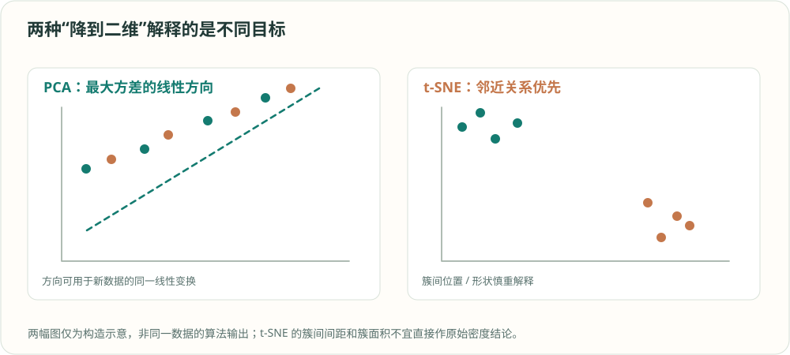
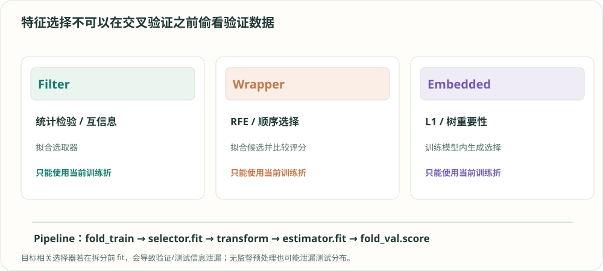
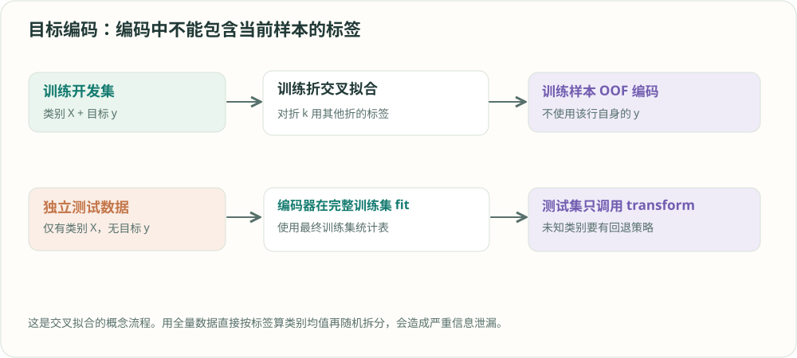

降维与特征工程：保留什么信息，避免什么泄漏
PCA 优化线性方差保留，t-SNE 更强调局部邻域，特征选择与目标编码则可能使用标签。明确每一步的学习目标与数据边界，才能避免用漂亮的二维图或意外泄漏误判模型质量。
01 · 特征工程并不是任意堆叠更多列
原始数据可能包含时间戳、类别、计数、文本或图像，直接把原值塞进模型不一定有意义。特征工程把这些字段转换为模型需要的表示，例如对周期变量使用正余弦编码、按已知时点计算滚动统计、对类别使用独热或适当的编码方式；特征选择则尝试剔除无效、重复或噪声列。
每一步都必须问：输入在预测时能否取得？是否使用了之后才出现的标签或统计量？如果是，就算模型训练集的准确率很高，也可能是信息泄漏。不同数据类型需要不同编码方式，不存在一个对所有数据都最优的“标准流水线”。
02 · PCA：用正交基保留样本方差
主成分分析（PCA）将每个特征减去在训练集计算的均值，寻找方差最大的正交方向。输入矩阵 X∈R^(n×d) 经中心化后，对协方差矩阵进行特征分解，或直接使用 SVD 计算右奇异向量；保留前 k 个方向，就把样本变换成 (n,k) 的新表示。
其中 μ 是从训练集得到的 d 维均值向量，Vₖ∈R^(d×k) 的列是保留的主方向。保留的解释方差比描述样本变动量，而不是预测目标保留率。一个方差很小的方向仍可能恰好区分目标类别，因此 PCA 是否有助于预测需要在合适的交叉验证方案中检验。
03 · t-SNE 与 PCA 不是同一个问题的替代求解器
t-SNE 根据原空间样本间的相似性构建邻域概率，然后优化低维布局，使局部邻域结构尽可能被保留。它很适合探索可能的局部群组，尤其是高维表达的可视化；但它不是通过线性投影保留最大方差。

t-SNE 图上的簇间距离、簇面积、密度经常不适合当作原空间的量化比较。不同 perplexity、初始化和随机种子可能得到不同布局。对高维数据通常可先使用 PCA 降到适中维度，再做 t-SNE，以降低噪声和计算成本；但流程本身仍需结合数据含义与样本数选择。
scikit-learn 的 TSNE 本质是为给定样本学习嵌入，通常不提供一般 PCA 那样独立的 transform(X_new) 供生产新样本使用。若目标是把新数据稳定映射到一个固定低维空间，需选择有合适 out-of-sample 机制的方法，而不是把 t-SNE 可视化当成生产特征变换。
04 · 特征选择的三条路线
过滤法（Filter）基于统计关联度、互信息或其他评分直接筛选特征；包裹法（Wrapper）训练模型并根据验证表现搜索子集，例如顺序选择或递归特征消除；嵌入法（Embedded）把选择过程纳入模型拟合，例如 L1 系数稀疏或某些树模型给出的重要性。

过滤法的高分不保证在模型中有独立价值；包裹法可能非常耗算力并过拟合验证集；嵌入法的结果依赖模型假设、正则化强度和特征相关性。既然不同选择器会从标签学参数，绝不能先在完整数据上选完特征再做随机 CV，从而把验证折的信息泄漏回模型。
05 · 目标编码：分类标签最容易泄漏的地方
对高基数类别，用每个类别对应的平均目标值构造数值表示，看似是极强的特征压缩技巧。然而若一个类别只在少量样本中出现，用全量数据直接计算类别均值就会让每一行编码包含自身标签，甚至构成一张近似的标签查找表。

交叉拟合（cross-fitting）让某条训练样本的编码统计来自不包含该样本的其他训练折；最终测试样本则使用完整开发训练数据拟合好的统计映射。scikit-learn 的 TargetEncoder.fit_transform(X,y) 包含内部交叉拟合；它与 fit(X,y).transform(X) 在训练集上的行为不同。这里的内部编码折并不能替代外层模型评价切分。
时间序列、分组数据或同一用户重复记录还必须避免跨时间或跨实体传播目标信息。默认的随机交叉拟合并不自动适合所有预测任务。
06 · 如何在 pipeline 里保持评估边界
监督式的 SelectKBest、PCA 甚至标准化步骤都应放入模型 Pipeline，让每个 CV 训练折分别拟合。选择多少个特征、保留多少个主成分，通常也是需要交叉验证的超参数；如果在选择后观察测试分数反复试错，所谓“测试集”就失去了独立作用。
07 · 离线实验：在真实内置数据上比较两条转换流程
使用内置的乳腺癌诊断特征数据，仅作为机器学习技术演示而非临床建议。两个候选模型分别使用监督式特征选择与无监督 PCA，它们的预处理都仅在每折训练数据上拟合。开发集 CV 决定获胜方案，测试集只报告一次。
import numpy as np
from sklearn.datasets import load_breast_cancer
from sklearn.model_selection import train_test_split, StratifiedKFold, cross_val_score
from sklearn.pipeline import make_pipeline
from sklearn.preprocessing import StandardScaler
from sklearn.feature_selection import SelectKBest, f_classif
from sklearn.decomposition import PCA
from sklearn.linear_model import LogisticRegression
from sklearn.metrics import balanced_accuracy_score
X, y = load_breast_cancer(return_X_y=True)
Xdev, Xtest, ydev, ytest = train_test_split(
X, y, test_size=0.2, stratify=y, random_state=14)
models = {
"select": make_pipeline(StandardScaler(),
SelectKBest(score_func=f_classif, k=10),
LogisticRegression(max_iter=2000)),
"pca": make_pipeline(StandardScaler(), PCA(n_components=8),
LogisticRegression(max_iter=2000)),
}
folds = StratifiedKFold(n_splits=3, shuffle=True, random_state=14)
results = {
name: float(cross_val_score(model, Xdev, ydev, cv=folds,
scoring="balanced_accuracy").mean())
for name, model in models.items()
}
best = max(results, key=results.get)
model = models[best].fit(Xdev, ydev)
pred = model.predict(Xtest)
print("CV options:", results, "selected:", best)
print("held-out balanced accuracy:", balanced_accuracy_score(ytest, pred))
assert len(pred) == len(ytest)
assert all(np.isfinite(v) for v in results.values())依赖 Python 3.10+、NumPy、scikit-learn。不能据此宣称某种技术比另一种始终适合真实医疗数据，也不能把交叉验证分数当作临床灵敏度或特异度。
08 · 辅助探索：t-SNE 是可视化，不是预测模型
下面用 Iris 数据构造一个二维 t-SNE 表示，断言输出二维且有限，重点是检查 API 与可复现性。由于 t-SNE 没有显式的稳定 out-of-sample 推理路径，这一步只用于探索，不再将嵌入坐标交给训练/测试分类器以比较它们的测试分数。
import numpy as np
from sklearn.datasets import load_iris
from sklearn.preprocessing import StandardScaler
from sklearn.manifold import TSNE
X = load_iris().data
X_scaled = StandardScaler().fit_transform(X) # only exploratory embedding
layout = TSNE(n_components=2, perplexity=20,
random_state=14, init="pca",
learning_rate="auto").fit_transform(X_scaled)
print("t-SNE layout shape:", layout.shape)
assert layout.shape == (150, 2)
assert np.all(np.isfinite(layout))这段并未使用标签训练分类器，且明确属于探索；若实际数据已隔离测试，探索阶段也应避免从测试集学习用于生产的处理器。t-SNE 参数默认值会随 scikit-learn 版本演进，应在项目中记录确切版本。
09 · 来源与回顾
降维的根本问题不是“把 30 维变成 2 维”，而是要明确保留哪种信息——总体方差、局部邻域、与目标的关联还是最终决策能力。训练折内统计、生产特征可用时点与跨人群稳定性，都是与图形同样重要的部分。